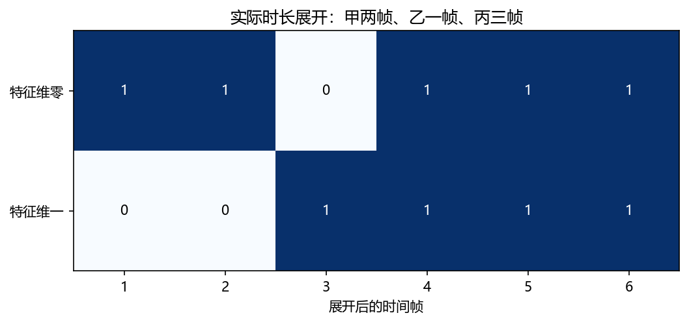
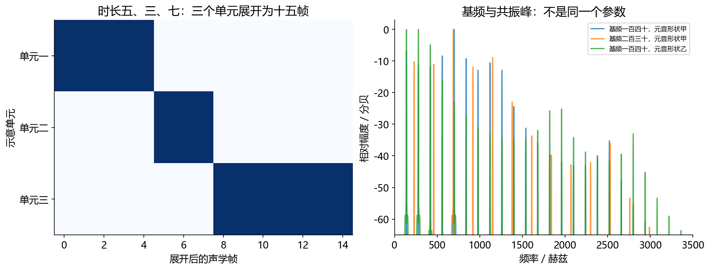

看图理解 · 跟着推演 · 对照真实结果
第14课 · 文字怎样变声音：时长、音高与声码器
先建立直觉，再逐节讲原理、代码与结果；章节目录可定位学习。跟着三个发音单元变成六帧，理解 TTS 每一段负责什么。
从直觉、原理，到代码与结果
本版保留导览小实验，增加教材逐节精讲、代码分段阅读和结果解释。三个项目另有本次真实模型短推理，第 12 课增加实际训练曲线。按右侧小节分次学习即可，不必一次看完。
完整文字、规范公式和注释代码仍在上方“读完整图文”。视频中的历史报告、教学算例与本次实测分别标明，短演示不冒充完整重训或设备验收。
先修：理解数组轴、采样率、帧移与 Mel 特征。
- 画出中文 TTS 的模块化链路
- 手算时长展开与名义时间
- 区分内容正确、音色相似和自然度
本课覆盖清单与证据范围
- 1. 先把任务拆成三个问题
- 2. 中文前端不是“查拼音字典”那么简单
- 3. 音高、响度与音色：相互有关，但不是同一个旋钮
- 4. 一个完整手算：三个发音单元怎样变成六帧
- 5. 声码器为什么要把时间长度放大很多倍
- 6. 自回归、扩散、流匹配，先用生成方式区分
- 7. 怎样判断一段合成真的更好
- 8. 练习答案、排错与就业交付
结果从哪里来
- 导览中的小算例实际执行
- 原教材逐节讲解；正文代码/公式/图保留
实际代码是二维教学向量的时长展开，不是训练好的 TTS，不输出自然语音，不证明音色或自然度表现。
新版视频时间轴已改变，单独记录续播位置；学习计划的完成勾选保持不变。
跟着运行：注释代码、实际输出与结果图
下面代码在生成本站时实际执行。这里只是教学小实验，不是完整模型训练或业务设备测评。
import numpy as np
# 三个单元，每个由二维教学向量表示
units = np.array([[1., 0.], [0., 1.], [1., 1.]])
durations = np.array([2, 1, 3])
assert np.all(durations >= 0)
# 沿单元轴复制，不是复制特征维
expanded = np.repeat(units, durations, axis=0)
frame = np.arange(1, len(expanded) + 1)
feature0, feature1 = expanded[:, 0], expanded[:, 1]
hop, fs = 256, 16000
nominal_ms = len(expanded) * hop / fs * 1000
for row in expanded:
print(row.astype(int).tolist())
print("形状", expanded.shape)
print("名义时长", nominal_ms, "ms")
assert expanded.shape == (6, 2)
本次实际输出
[1, 0] [1, 0] [0, 1] [1, 1] [1, 1] [1, 1] 形状 (6, 2) 名义时长 96.0 ms

精讲中的代码、运行步骤与大图
代码片段用于逐行理解；真实运行结果仅限明确标注“本次实际”的部分。教材历史图保留原有实验范围。
代码精读 04 · 第1–18行
源码精读 / 教学片段，需配套环境与上下文，不等同于独立脚本。
import numpy as np
units = np.array([[1., 0.], [0., 1.], [1., 1.]]) # [单元=3, 特征=2]
durations = np.array([2, 1, 3], dtype=int) # 每个单元占几帧
assert len(durations) == len(units)
assert np.all(durations >= 0) # 负时长没有意义
expanded = np.repeat(units, durations, axis=0) # 只沿单元轴复制
print(expanded.tolist())
print(expanded.shape) # (6, 2)
# 转置只为画图：横轴是时间帧，纵轴是两个特征维度。
from pathlib import Path
import matplotlib
matplotlib.use("Agg")
import matplotlib.pyplot as plt
plt.rcParams.update({"font.family": "Microsoft YaHei", "axes.unicode_minus": False})
fig, ax = plt.subplots(figsize=(8, 3.2))
ax.imshow(expanded.T, cmap="Blues", vmin=0, vmax=1, aspect="auto")代码精读 04 · 第19–29行
源码精读 / 教学片段，需配套环境与上下文，不等同于独立脚本。
ax.set(xticks=range(6), xticklabels=range(1, 7),
yticks=[0, 1], yticklabels=["特征维零", "特征维一"],
xlabel="展开后的时间帧", title="实际时长展开：甲两帧、乙一帧、丙三帧")
for frame in range(6):
for feature in range(2):
value = expanded[frame, feature]
ax.text(frame, feature, str(int(value)), ha="center", va="center",
color="white" if value > 0.5 else "black")
Path("tutorial/figures").mkdir(parents=True, exist_ok=True)
fig.savefig("tutorial/figures/ch14_duration.png", dpi=150, bbox_inches="tight")
plt.close(fig)结果读图 04 · 4. 一个完整手算：三个发音单元怎样变成
原教材运行记录

原教材已存图 不是本次新测 先确认实验范围 再解释坐标与单位
结果读图 04 · 4. 一个完整手算：三个发音单元怎样变成
原教材运行记录

原教材已存图 不是本次新测 先确认实验范围 再解释坐标与单位
代码精读 05 · 第1–15行
源码精读 / 教学片段，需配套环境与上下文，不等同于独立脚本。
import torch
from torch import nn
vocoder = nn.Sequential(
nn.Conv1d(80, 16, kernel_size=3, padding=1), # 提取相邻帧结构
nn.LeakyReLU(0.1), # 保留少量负向梯度
nn.ConvTranspose1d(16, 8, 8, stride=4, padding=2), # 长度乘 4
nn.LeakyReLU(0.1),
nn.ConvTranspose1d(8, 1, 8, stride=4, padding=2), # 再乘 4
nn.Tanh(), # 输出限制到 -1 至 1
)
mel = torch.randn(2, 80, 10) # 两条、各十帧特征
wave = vocoder(mel)
print(wave.shape) # [2, 1, 160]
assert wave.shape == (2, 1, 160)闭卷自测：三个单元时长为 [4,2,3]，帧移 10 ms，名义帧移总时长多少？
时长之和为 9 帧，9×10=90 ms；最终波形边界仍依赖系统对齐约定。
逐字讲稿 · 可定位回看
文字“2027年1月10日”并没有直接给出所有声音采样。系统通常先决定怎样把数字念出来，再决定每个发音持续多久、哪里停顿。相同一句话也可以平静地说，或带着疑问说。
先处理文本：日期中的 2027 年通常读作“二〇二七年”，而不是把所有数字场景都按同一方式念。上下文很重要。 做一个只讲时长的玩具例子：三个发音单元 A、B、C 分别分配 2、3、1 帧，展开成 [A,A,B,B,B,C]。每帧若代表 10 毫秒，共 60 毫秒；这不是自然发音长度的推荐值。
这些标签或声学特征还不是能播放的波形。模块化系统会继续通过声码器等生成模块，把表示变成声音采样。 ASR 是声音到文字，TTS 是文字条件到声音，但两者不是把同一个函数倒过来执行。文字通常不足以唯一决定一条波形。
看到一句请打开空调，机器不只要知道文字内容，还要决定使用什么声音，以及哪里停顿、每个音持续多久、句子是请求还是命令。文字没有把这些全部写出来。
把说什么叫内容，把声音的身份特征叫音色，把节奏、重音、停顿和音高变化叫韵律。声音像同一个人，并不保证每个字读对；读对也不代表自然。
我们用三个教学发音单元，追踪它们怎样展开成六个声学时间帧。这个小例子不是完整合成器，但能把最容易迷糊的文字长度与声音长度关系讲清。
第一站处理文字写法。年份二零二六和金额两千零二十六元，数字相同，读法不同。规范化要结合语境，把书写形式转成适合发音的表示。
第二站处理读音，例如银行和行走的行不同。模型单元可能拆成声母、韵母、声调，不一定一个汉字对应一个 token，也不是查一次拼音字典就完成。
接下来安排时长、音高和声学表示，再由声码器生成高采样率波形。现代模型可能合并这些模块，但查错时仍可按这些功能问：到底是哪一步决定错了。
如果一个近似周期声源每五毫秒重复一次，先把五毫秒换成零点零零五秒，再取倒数，得到二百赫兹。这就是这个简单周期的基频。
基频与听到的音高密切相关，声道共振又影响频谱包络和元音特征。把细密谐波的间隔和较缓的包络形状分开看，就不会把二者混成同一个旋钮。
清辅音可能没有稳定周期，因此没有有意义的基频。处理基频标签要区分清浊音，不能把所有零都当作一种真实的低音，也不能仅用基频判断身份。
现在给三个单元起名 A、B、C。A 的向量是一和零，B 是零和一，C 是一和一。每个向量只有两个维度，便于画图，不是真实音素的物理测量。
指定时长分别二、一、三帧，就得到 A、A、B、C、C、C。输入是三行两列，输出是六行两列，改变的是时间长度，特征维度仍然是二。
如果把时长全部乘二，会得到十二帧。这说明时长控制如何拉长序列，但真实语速变化还涉及对齐、停顿和自然度，不是重复得越多就越好听。
每个帧移是二百五十六个样点，采样率每秒一万六千点，所以一个帧移是零点零一六秒，也就是十六毫秒。单位要先统一，别把毫秒直接当秒乘。
六个帧移对应九十六毫秒。这个例子故意很短，只为说明计算关系，并不是说三个真实发音单元通常只需要这么一点时间，更不是一段自然语音样本。
最终生成波形的样点数，还要检查分析窗、边界填充和声码器的对齐规则。这里说名义帧移时长，是为了避免把简化公式当作所有系统的精确边界。
第一组数组是三个单元，每行两个数字；第二组数组是每行需要重复多少次。先检查时长非负，因为负的复制次数没有声音长度上的合理含义。
核心是 repeat，指定 axis 等于零，沿单元所在的行方向展开。若错误写成一，就会复制特征列，形状变了，却没有实现我们希望的时间展开。
最后取两个特征列分别绘图，并用输出行数乘帧移除采样率算时间。这段代码只执行已知时长，不会预测时长，更没有训练一个自然语音合成模型。
横轴从第一帧到第六帧。第一条特征线在前两帧为一，第二条为零，对应 A。第三帧两条线交换，说明到了 B，而不是声音突然反相。
最后三帧两条特征都是一，对应 C 的向量一和一。打印出的矩阵正好是六行两列，名义时间九十六毫秒，图、形状和手算互相核对。
图中的一和零只是教学向量数值，不能解释为响度大小。这个限制很重要：看起来像声学图，不代表它就是声谱图，更不能评价生成语音是否自然。
假设声学表示每十六毫秒一帧，而波形每秒一万六千个样点，两者时间密度差很多。声码器要把稀疏时间表示变成细密波形，并补充合理的声音细节。
Mel 压缩了频率信息，通常也没有完整相位，所以这不是无损逆变换。随机初始化的声码器即使输出长度正确，也只说明接口能运行，不代表已经会说话。
真实系统总上采样倍率通常要和帧移匹配，还要处理边界。换声码器时先核对采样率、频带数、归一化和帧移，金属音不一定靠增加网络层数解决。
自回归像根据已生成的单元继续生成下一个，因此输出步骤之间有依赖。这里的单元可能是声学帧或音频 token，并不一定是一个文字。
扩散类方法通过若干步恢复带噪表示；流匹配学习随生成进度变化的速度场。这个生成进度不是录音时间轴，新手先分清两个时间，不急着背完整推导。
比较这些方法时，要分别测内容正确、音色相似、自然度和首块延迟。用识别器算错字率可以查漏字，但无法代替音色和自然度评价，也会受到识别器自身错误影响。
现在把时长改成四、二、三，帧移改成十毫秒。先在纸上加出九帧，再乘十，得到九十毫秒。不是三个单元乘十，时长数组每个数字都要计入。
你的实习练习可以固定一套中文困难文本，包括年份、金额、多音字、缩写、长句和停顿。只改一个前端规则，保留修好和变坏的音频，再说明原因。
声音参考应有授权，不能用未授权克隆充作品集。视频可以帮你读懂链路，但请亲手改一次时长数组，解释形状与图的改变，才算完成这一课的动手验收。
时长展开只是把文字单元映射到声学帧的一步。完整TTS还要处理文本规范化、多音字、音素、停顿，以及训练录音与转录的对应关系。数字日期与英文缩写就是常见难点。
声学模型可以预测Mel、时长、音高等，也可以采用不同生成框架。它需要从数据学到韵律与发音，不能仅凭重复一个随机向量生成自然讲话。
声码器接收特征生成波形，需要与声学前端的采样率、hop和Mel定义一致。本课程的随机小声码器只验证形状与梯度，不是已经训练好的自然语音系统。
先检查文字内容是否完整表达，尤其是长句、数字、多音字、停顿和句尾。响度大、音质干净不代表没有漏读或重复，自动识别回转录也只能辅助检查。
自然度需要观察重音、节奏和连接，不能拿单条好听样例代表整体。若做主观评分，要说明人数、盲听、样本选择和协议，不能把预测分数写成人工MOS。
流式TTS还要看首包延迟、持续生成速度、块拼接和打断后的残留。总RTF很低但第一包迟迟不出，交互仍然会感觉慢；这与离线生成完再播放是不同问题。
TTS 是 text-to-speech，也就是把文字条件转换成语音。做好它至少需要回答：说什么、谁来说、怎样说。第一项是内容，第二项是音色或说话人特征，第三项是韵律，包括重音、节奏、停顿与音高变化。
可以把文字看成乐谱、声音看成演奏，但要记住这个类比的限制：普通文字没有写清每个音的精确长度和音高，同一句话可以有很多合理说法。模型要从文本与条件中补足这些没有明写的信息。
一个便于学习的模块化链路是：文本规范化→发音单元→时长及声学特征→声码器→波形。现代系统可能合并多个模块，或者先生成离散音频单元再解码，但这些功能问题仍然存在。学模型时先找它每一部分负责什么，再记模型名字。
“2026 年”通常按年份读数字，“2026 元”通常按数量读；电话号码又可能逐位读。3.5 kg、网址、英文缩写与算式都有不同规则。文本规范化的任务是把书写形式转换成适合发音的形式，而且应保留原文与转换结果，方便追查错误。
随后还有多音字消歧：“银行”和“行走”的“行”读法不同；词的边界和上下文都会影响读音。普通话中还涉及声调、变调、轻声、儿化，以及标点与语义造成的停顿。一个字的拼音也不必等于模型使用的一个 token：系统可能拆成声母、韵母和声调，或使用其他表示。
别把所有前端处理都硬写成字符串替换。例如“行”统一换成一个读音，会修好一个句子却破坏另一类句子。可靠方法是建立测试组：同一个规则至少放正例、反例、边界例，再观察改变是否只修复目标问题。
浊音的声带振动通常有近似周期，其倒数是基频 F下标0。若周期为 5 ms，F下标0=（1）除以（0.005 s）=200 Hz。它与感知音高密切相关，但音高感知不是对所有信号都等同于一个频谱最大峰。
清辅音等无周期片段可能没有有意义的 F0。训练 F0 预测时，常要同时处理清浊音标记，不能把所有无声或清音位置的 0 都当作真实的“零赫兹音高”。能量描述强弱，通常从短时波形或频谱计算；感知响度还受频率、持续时间和上下文影响。
共振峰来自声道的共振，能影响元音身份。声源的谐波间隔主要随 F0 变，频谱包络又受到声道滤波等因素影响。只把一个人的 F0 调高，往往得到音高变化的声音，并不等于换成另一个人的完整音色。
假设有三个示意单元 A、B、C，每个用一个二维向量表示：A=[1,0]，B=[0,1]，C=[1,1]。预测时长分别为 2、1、3 帧。时长调节器按次数复制向量：
若每帧移 256 个样点、采样率为 16000 Hz，则每帧移对应 16 ms，六个帧移对应 96 ms。这个极短例子仅用于计算，不是说一句真实中文只要 96 ms；最终波形边界还要按分析窗、填充和声码器对齐规则处理。
从课程根目录 audio-course-zh 运行下面完整代码，既打印展开矩阵，也把这个六帧例子画到 tutorial/figures/ch14_duration.png。
前两列是 A 的 [1,0]，第三列是 B 的 [0,1]，最后三列是 C 的 [1,1]。深色只表示这个玩具向量中的数值 1，不是实际音量或频谱能量。
预期行顺序为 [[1,0],[1,0],[0,1],[1,1],[1,1],[1,1]]。这里 axis=0 是沿单元轴展开；误写 axis=1 会复制特征维，而不是让声音变长。这段代码只执行已知时长，不会自动学习时长。真实系统还需要对齐方法或时长监督、时长预测器及相应训练目标。
这张图由已执行的 run_experiments.py 生成，不是上面六帧短代码的直接输出。左侧使用时长 [5,3,7] 展示十五帧复制关系，所以图的帧数与本节手算不同。右侧用合成谐波源与共振滤波器比较不同 F0、不同共振参数：先看细密谱峰间隔，再看较慢变化的包络，就能把两个因素区分开。 教学声音甲、教学声音乙 是人工类元音，帮助听出参数作用，不是真人克隆，也不能用来展示自然 TTS 的质量。试听先把设备音量调低。
先看中文注释：[单元=3, 特征=2]；每个单元占几帧；负时长没有意义。断言把预期写成可失败的检查。通过只说明这一条件成立，不自动代表声音质量或全部场景合格。
先看中文注释：只沿单元轴复制；(6, 2)；转置只为画图：横轴是时间帧，纵轴是两个特征维度。。打印是观测点。把这里的真实值与理论预期比较，若不一致应保留输出排错，而不是手工改成期望数字。
绘图展示的是传入数组。核对横轴单位、图例与统一尺度后，才可以比较不同处理的变化。
这几行依次得到yticks、xlabel、value。它们对应“4. 一个完整手算：三个发音单元怎样变成六帧”中的中间量。逐行代入本节小例子的数值，确认每次赋值改变的量；代码片段承接前一段变量，不应脱离上下文单独运行。
绘图展示的是传入数组。核对横轴单位、图例与统一尺度后，才可以比较不同处理的变化。
绘图展示的是传入数组。核对横轴单位、图例与统一尺度后，才可以比较不同处理的变化。
先看这张随教材保存的图。上方代码实际运行结果：二维单元向量按 2、1、3 帧展开。本次视频引用既有结果，不把它称为新运行。
横轴、纵轴、图例和单位决定图在回答什么问题。若曲线重合，先问它验证的是数值等价、形状还是算法质量。图像相似不自动证明真实业务效果相同。
把图中观察与本节假设联系起来，再回到前面的代码确认数组来源。合成信号实验、历史报告和真实模型输出属于不同证据范围，不能混成同一个成绩。
先看这张随教材保存的图。时长展开、基频与共振峰示意。本次视频引用既有结果，不把它称为新运行。
横轴、纵轴、图例和单位决定图在回答什么问题。若曲线重合，先问它验证的是数值等价、形状还是算法质量。图像相似不自动证明真实业务效果相同。
把图中观察与本节假设联系起来，再回到前面的代码确认数组来源。合成信号实验、历史报告和真实模型输出属于不同证据范围，不能混成同一个成绩。
Mel 序列只在每个时间帧保存少量频带信息；波形却每秒有几万个样点。声码器负责从声学表示生成细密波形。它不是无损地“把 Mel 逆变换回去”：Mel 压缩了频率信息，通常还没有完整相位，因此需要学习生成合理细节。
下面的教学网络从 [B,80,T] 变成 [B,1,16T]。B 是批次，80 是输入频带维，1 是输出单声道。随机权重仅能验证结构，不能产生自然语音。
不含额外输出填充且膨胀率为 1 时，一层转置卷积输出长度为：
其中 s、p、k 分别对应代码里的 stride、padding、kernel_size。代入本例得到 (L下标in-1)乘4-4+8=4L下标in，连续两层就是 16 倍。若真实 Mel 帧移是 256 样点，整体上采样与边界处理必须相应配合，不能随便接这个 16 倍教学声码器。
转置卷积不是普通卷积的数值逆运算，也不是把矩阵简单转置；这里用它学习如何从较稀疏的时间格点生成更多输出样点。PyTorch 的长度公式还包含膨胀率和额外输出填充，换参数时应重新计算。
neural_lab.py 中还有完整的形状与梯度检查：用不同 FFT 窗长比较预测与目标的对数幅度谱。长窗更精细地观察频率，短窗更敏感于时间瞬态。对数前加小常数防止 log(0)。频谱损失补充了波形误差的信息，但损失下降也不等于人耳一定觉得自然。
先看中文注释：提取相邻帧结构；保留少量负向梯度。卷积按核长度读取邻域。填充方式决定边界和输出长度，双侧填充还可能引入未来信息。
先看中文注释：长度乘 4；再乘 4；输出限制到 -1 至 1。这几行仍属于5. 声码器为什么要把时间长度放大很多倍的同一处理链，输入变量沿用前一段，不是一个独立程序。
先看中文注释：[2, 1, 160]。断言把预期写成可失败的检查。通过只说明这一条件成立，不自动代表声音质量或全部场景合格。 打印是观测点。把这里的真实值与理论预期比较，若不一致应保留输出排错，而不是手工改成期望数字。
自回归生成是“根据已生成内容继续生成下一单元”。单元可能是声学帧，也可能是离散音频 token。优势是容易利用历史输出；代价是生成步骤之间存在依赖，停止条件不稳时还可能重复或漏内容。离散音频 token 通常来自音频编码/量化系统，不一定对应一个字或音素。
扩散类方法通常学习从带噪表示恢复数据相关结构，推理通过若干步迭代生成。流匹配学习一个随位置和生成时间变化的向量场，用它把初始噪声逐步运输到数据分布。这里的“生成时间”不是录音中的第几秒，是生成过程的进度变量。两类方法联系紧密，但训练目标与路径设计并不都相同。
在 t=0.25 时 x下标t=0，沿这条线的目标速度是 x-z=4。若模型预测速度 3，平方损失为 1。使用正确速度、步长 0.25，四步可从 -1 走到 3。 这个手算只说明“学习速度场”的含义。真实模型面对大量样本、条件与高维表示，推理时没有正确目标点直接可用；也不是所有流匹配路径都是这条直线。进一步参阅 Flow Matching 原论文。不必为了应聘把三类模型都从头训练，先能解释一条完整链路并复现可靠测试更重要。
内容、音色、自然度和速度应该分开评价。把合成声音送入 ASR 得到 CER，可以辅助查漏字错字，但这个结果同时受评测 ASR 的错误影响；CER 很低不意味着音色相似或语气自然。说话人嵌入相似度也只覆盖音色的一部分，并受模型和录音条件影响。
主观试听应使用同一播放响度与环境、随机顺序，尽量避免听者知道哪个是“改进版本”。MOS 要写明人数、评分说明和不确定性，不能自己听一遍就声称达到某个 MOS。实时业务还应记录首个可播放音频块延迟、后续生成速度及断句连续性。
零样本音色条件是在推理时提供参考音频，微调则真正更新参数。二者不要混称。使用声音时要取得授权，不把未授权克隆或个人敏感录音作为作品集材料。
练习一：时长 [4,2,3]、帧移 10 ms，名义帧移总长度是多少？答案：9 帧，90 ms；不是三个单元所以 30 ms。练习二：只增加 F0，是否保证“更像女声”？答案：不保证，音色还包括声道、发声方式等因素，不应把单一 F0 等同身份类别。
练习三：随机声码器成功输出 [2,1,160]，能否写成“完成 TTS 模型训练”？答案：不能，只验证了前向形状。
现象：多音字稳定读错。优先定位：文本规范化、分词、发音表示。
现象：漏字或重复字。优先定位：对齐、时长、生成停止、文本分块。
现象：金属音或断裂。优先定位：声码器输入配置、跨块拼接、分布不匹配。
现象：语速一改音色也变。优先定位：时长策略、波形重采样方式、模型能力边界。
现象：参考很像但噪声也被复制。优先定位：参考质量、条件编码、训练分布。
就业作业是建立一份中文困难文本测试集，至少覆盖数字、多音字、英文缩写、长句和停顿；固定模型版本与参考条件，
做一次前端或分块策略改进，并保留成功和失败音频。你的贡献可以小，但要让别人能复现、能解释为何改善、能看到改善没有牺牲哪些条件。
适用边界与参考正文
实际代码是二维教学向量的时长展开，不是训练好的 TTS，不输出自然语音，不证明音色或自然度表现。
教学图与实验图由本站整理生成；项目代码、预训练模型和公开数据的来源见配套正文。旁白是本地中文语音合成，不是教师真人录音，也不是 NotebookLM 生成。没有向 Google 上传项目材料。